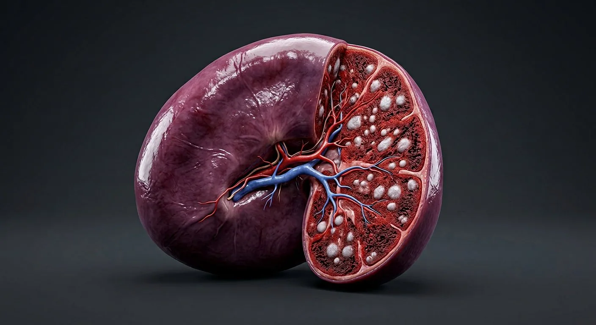
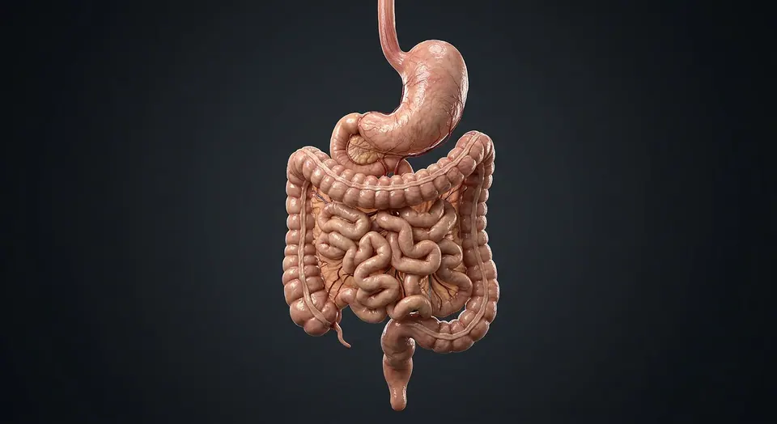
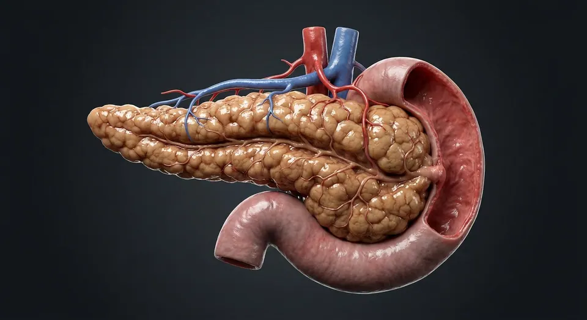

Gastrosplenic ligamentCapsule & trabeculaeTrabecular arteryTrabecular veinHilumSplenic lymphatic outflowMarginal zoneWhite pulpSplenic arteryCentral arteriolePeriarteriolar lymphoid sheathPenicillar arteriolesSplenic sinusoidsSinusoidal slitsRed pulpSplenic cordsSplenic veinSplenic macrophagesB-cell follicleGerminal centre- 01Capsule & trabeculae
- 02Red pulp
- 03White pulp
- 04Hilum
- 05Splenic artery
- 06Splenic vein
- 07Germinal centre
- 08Splenic sinusoids
- 09Periarteriolar lymphoid sheath
- 10B-cell follicle
- 11Marginal zone
- 12Splenic cords
- 13Sinusoidal slits
- 14Central arteriole
- 15Penicillar arterioles
- 16Trabecular artery
- 17Trabecular vein
- 18Splenic macrophages
- 19Splenic lymphatic outflow
- 20Gastrosplenic ligament
How this part of the body works
Blood enters the spleen through the splenic artery and percolates through two compartments. White pulp — cuffs of lymphocytes around central arterioles — mounts immune responses to blood-borne antigens, making IgM and opsonins. Red pulp is a mesh of sinusoids and cords where old, stiff or antibody-coated red cells are trapped and destroyed by macrophages, and where platelets are stored (a third of the body's pool). In fetal life the spleen makes red cells; after splenectomy the liver and marrow take over, but the loss of opsonisation leaves lifelong risk of encapsulated bacterial sepsis.
Read the anatomy, part by part
These 20 structures describe anatomy related to the chapter’s regional illustration. Each entry separates location, function and a clinical point.
Capsule & trabeculae
A fibroelastic capsule sending trabeculae into the pulp, carrying the vessels.
What it doesStructural framework and conduit for vessels.
Clinical connectionThe capsule is thin and the pulp fragile — the spleen tears easily in blunt abdominal trauma and bleeds briskly.
Red pulp
Splenic cords of Billroth and wide sinusoids lined by stave cells with slit-like gaps.
What it doesFilters senescent and abnormal red cells; recycles iron; stores platelets and monocytes.
Clinical connectionIn hereditary spherocytosis the rigid spheres are trapped here, causing haemolytic anaemia cured by splenectomy.
White pulp
Periarteriolar lymphoid sheaths (T cells), follicles (B cells) and a marginal zone rich in macrophages.
What it doesImmune surveillance of blood: antibody and opsonin production, especially against capsules.
Clinical connectionIts loss explains why asplenic patients are vulnerable to pneumococcus, meningococcus and H. influenzae.
Splenic sinusoids
Discontinuous, leaky channels whose endothelial slits force red cells to squeeze through.
What it doesThe mechanical filter: healthy deformable cells pass; rigid ones are eaten.
Clinical connectionMalaria parasites stiffen red cells, which is why the spleen enlarges in chronic infection.
Hilum
The notched medial border where splenic vessels enter and the tail of pancreas and stomach fundus relate.
What it doesVascular gateway; also the site of accessory spleens in ~15% of people.
Clinical connectionA missed accessory spleen can cause relapse of disease after splenectomy for ITP.
Splenic artery
A tortuous branch of the coeliac trunk running along the upper border of the pancreas.
What it doesSupplies the spleen, pancreas (via branches) and part of the stomach.
Clinical connectionIts tortuosity makes it prone to aneurysm in pregnancy and portal hypertension.
Splenic vein
Drains the spleen and joins the superior mesenteric vein behind the pancreatic neck to form the portal vein.
What it doesReturns filtered blood to the portal system.
Clinical connectionIts thrombosis causes left-sided (sinistral) portal hypertension with isolated gastric varices.
Germinal centre
The pale core of an activated follicle where B cells proliferate and affinity-mature their antibodies.
What it doesProduces high-affinity, memory B cells against blood-borne antigens.
Clinical connectionVaccines against encapsulated organisms work partly by priming these centres before splenic loss.
Periarteriolar lymphoid sheath
T-cell-rich white-pulp cylinder surrounding a central arteriole.
What it doesSamples blood-borne antigens with nearby immune cells.
Clinical connectionDisrupted white pulp weakens adaptive responses.
B-cell follicle
Lymphoid nodule adjacent to central arterioles in white pulp.
What it doesSupports B-cell activation and antibody maturation.
Clinical connectionA germinal center appears after antigenic stimulation.
Marginal zone
Interface between white and red pulp with specialized macrophages and B cells.
What it doesTraps circulating antigens, including encapsulated bacteria.
Clinical connectionLoss of splenic function increases sepsis risk.
Splenic cords
Cell-rich Billroth cords of red pulp between sinusoids.
What it doesFilter circulating erythrocytes and platelets.
Clinical connectionAbnormal red-cell deformability leads to trapping.
Sinusoidal slits
Gaps between elongated endothelial stave cells in splenic sinusoids.
What it doesAllow deformable red cells to re-enter circulation.
Clinical connectionRigid or senescent red cells may fail to pass.
Central arteriole
Arteriole coursing eccentrically through white pulp.
What it doesBrings blood to immune surveillance regions.
Clinical connectionIt is central to a follicle-associated sheath, not the whole spleen.
Penicillar arterioles
Small branches departing splenic white pulp toward red pulp.
What it doesFeed terminal capillaries and splenic cords.
Clinical connectionTheir organization underlies blood filtration.
Trabecular artery
Arterial branch traveling within a splenic connective-tissue trabecula.
What it doesDistributes inflow deeper through parenchyma.
Clinical connectionTraumatic rupture can bleed briskly.
Trabecular vein
Venous channel within trabecular connective tissue.
What it doesReturns blood toward splenic vein at hilum.
Clinical connectionDistinct from sinusoidal microvessels.
Splenic macrophages
Phagocytes abundant in marginal zone and red pulp.
What it doesClear old erythrocytes and opsonized organisms.
Clinical connectionAsplenia impairs clearance of encapsulated pathogens.
Splenic lymphatic outflow
Lymphatic vessels largely associated with capsule and trabeculae.
What it doesDrain tissue fluid toward pancreaticosplenic nodes.
Clinical connectionSplenic blood filtering differs from node lymph filtering.
Gastrosplenic ligament
Peritoneal fold between stomach and spleen containing short gastric vessels.
What it doesSuspends spleen and carries vessels to gastric fundus.
Clinical connectionVessels may be injured during splenic mobilization.
Five questions about Spleen
Short answers grounded in the structures described above. Use the illustrated guide for anatomical context.
What is the spleen's function?
The spleen filters blood, removes aging red blood cells and helps immune cells respond to blood-borne material. Its red and white pulp perform different tasks.
Can you feel a normal spleen?
A normal adult spleen is usually protected beneath the left lower ribs and is not readily felt on examination; enlargement is a medical finding, not something this atlas can diagnose.
What is the capsule & trabeculae?
A fibroelastic capsule sending trabeculae into the pulp, carrying the vessels. Function: Structural framework and conduit for vessels.
Where is the white pulp located?
Periarteriolar lymphoid sheaths (T cells), follicles (B cells) and a marginal zone rich in macrophages. Function: Immune surveillance of blood: antibody and opsonin production, especially against capsules.
What is the function of the hilum?
Function: Vascular gateway; also the site of accessory spleens in ~15% of people. The notched medial border where splenic vessels enter and the tail of pancreas and stomach fundus relate.
Related anatomy guides
Follow these connected structures and body systems in the illustrated atlas.
 LiverThe body's chemical plant: metabolism, bile, clotting factors, detoxification and storage.↗
LiverThe body's chemical plant: metabolism, bile, clotting factors, detoxification and storage.↗
Stomach & intestinesThe gastrointestinal tract from oesophagus to rectum, with the villus that does the absorbing.↗
PancreasA dual gland: digestive enzymes from acini, hormones from the islets of Langerhans.↗ KidneyCoronal section plus a nephron: filtration, reabsorption, secretion and urine concentration.↗
KidneyCoronal section plus a nephron: filtration, reabsorption, secretion and urine concentration.↗Further reading
General anatomy references and related source chapters for continued study. These links do not make the digital illustrations clinical images or certify every anatomical variant.
This educational page is not medical advice and has not undergone formal clinical peer review. Spotted an error? Contact the editor.
Open the realistic interactive plate, label lines, focus view and self-test.